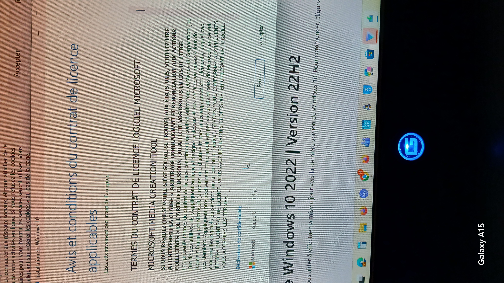
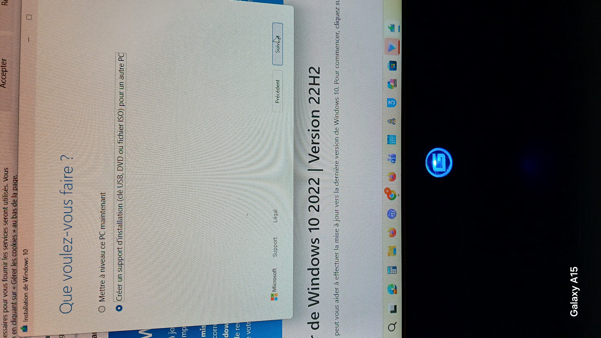
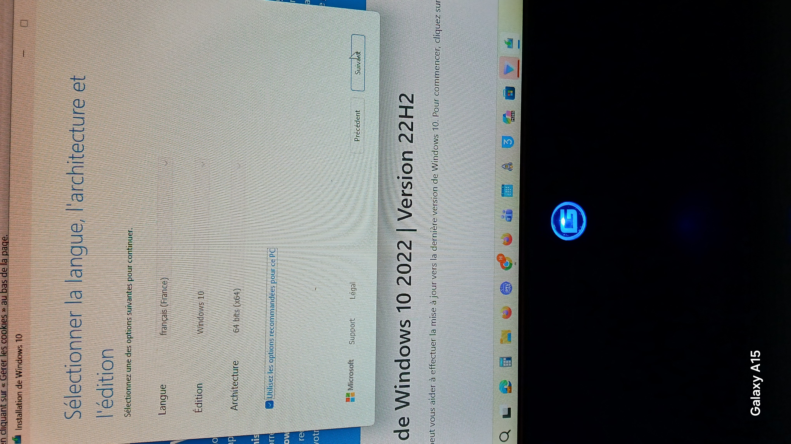
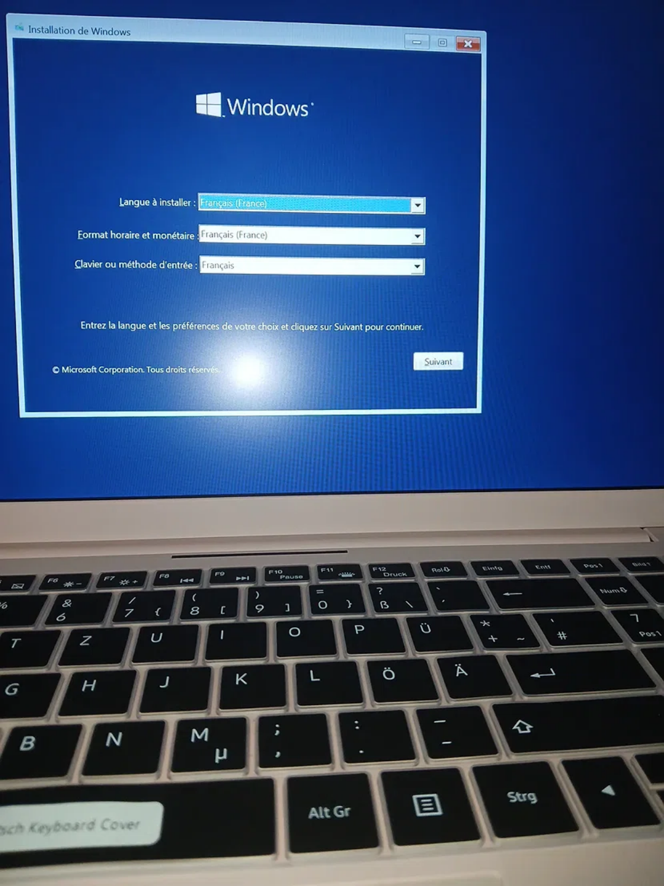
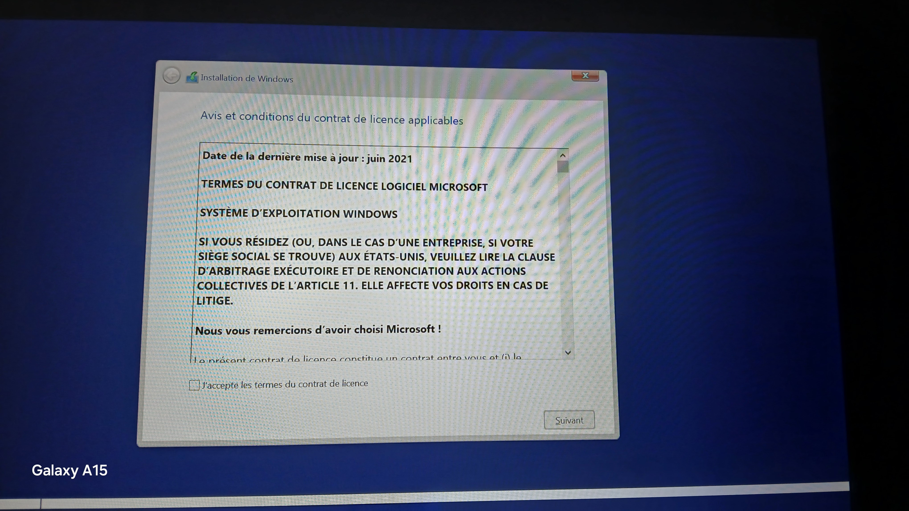
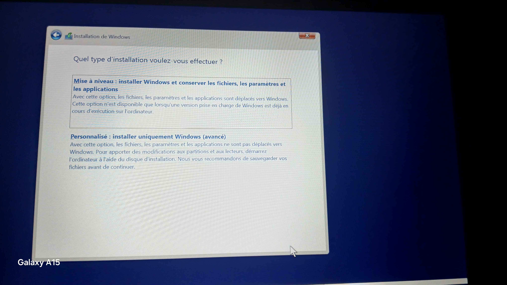
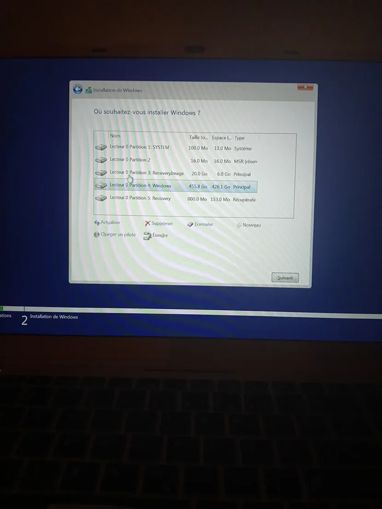

1. Installation de l'outil Microsoft
Ce qu'on a fait : J'ai installé l'outil Microsoft pour préparer la clé USB d'installation...
Pourquoi : Il fait tout automatiquement : il télécharge la bonne version de Windows et prépare la clé USB sans aucun réglage compliqué. Et je n'ai pas utilisé Rufus parce que c'est compliqué, il faut télécharger le fichier ISO soi-même dont nous avons besoin pour réaliser notre projet.

2. Étape 2
Ce qu'on a fait : J'ai coché la deuxième option pour créer une clé USB d'installation de Windows 10. J'ai fait ce choix pour préparer une clé USB qui me permettra d'installer Windows sur mon nouvel ordinateur.
Pourquoi : Je n'ai pas choisi la première option (« Mettre à niveau ce PC maintenant ») parce que celle-ci sert juste à faire une mise à jour directe du PC sur lequel je suis actuellement, sans créer de clé USB.

3. Étape 3
Ce qu'on a fait : J'ai choisi le français pour que toutes les informations de Windows s'affichent dans ma langue et soient faciles à comprendre. J'ai choisi le 64 bits car c'est la norme actuelle qui permet de gérer toute la mémoire (RAM) et de faire tourner les logiciels récents sans ralentissement. Édition Windows 10 : J'ai choisi car c'est ce que je veux installer sur mon ordinateur.

4. Étape 4
Ce qu'on a fait : J'ai choisi le disque mémoire flash USB car c'est l'option recommandée par l'outil de Microsoft.

5. Étape 5
Ce qu'on a fait : Ensuite j'ai branché la clé USB sur mon ordinateur et après je suis passé à l'installation.

6. Étape 6
Ce qu'on a fait : J'ai choisi la deuxième option.
Pourquoi : Car elle me permet de supprimer les anciennes partitions du disque dur pour repartir de zéro, effacer d'éventuels bugs ou virus et réinstaller un Windows tout neuf.

7. Étape 7
Ce qu'on a fait : Puis je supprime une à une les partitions pour effacer complètement l'ancien système et regrouper tout l'espace de mon disque en un seul.

8. Étape 8
Ce qu'on a fait : Maintenant j'ai supprimé toutes les partitions, mon disque est désormais vide et remis à zéro.
